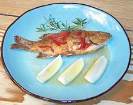

Fish Page
Battered
Frying
Brown Bellies
Draining

Served
Turners
Procedure
- If you're using a marinade, get your fish soaking in it in the fridge. You want about 1/2 hour to 1 hour soak.
- Prepare any coating or batter you will use. I almost always use just a dusting with rice flour. If you want more browning, use wheat flour, or a mix of the two. The photo examples were made with wheat flour.
- Make sure your fish is ready and dry. If it's been marinading, dry off any marinade it hasn't absorbed.
- In a spacious iron skillet, bring your oil up to temperature - you want about 375°F/190°C (when reflections off the surface start to "crawl" you're good to go.
- Dust or batter just enough fish for one batch, just before putting it in the oil or it will get soggy.
- Distribute fish in the skillet, thicker pieces first. If frying fillets, they go skin-side up. After a minute or so push the pieces around just a little to make sure they aren't stuck.
- Fry until golden on the bottom side and turn over, thin pieces first, and fry golden on the other side. Avoid having to turn the fish more than once. If the fish have opened enough to be stable, you can set them up to fry a bit from the belly.
- Start removing pieces as they are done, using a slotted turner and setting to drain on paper towels. Keep warm in the oven until all are done.
Hints
Pan:
You need a well seasoned cast iron pan with plenty of real estate so as not to crowd your fish. You don't want to use your expensive multi-ply stainless sauté pan to fry fish for at least three reasons.- The slanted sides of the cast iron pan allow easy access for turners and other tools at a shallow angle. The sauté pan's straight sides make this much more difficult.
- The slanted sides of the cast iron pan allow easier air circulation to carry away steam, while a straight sided pan traps steam and your fish ends up half fried and half steamed. Sauté pans, interestingly, aren't very good for sautéing but excellent for many other uses.
- No matter how careful you are you're going to get oil on the outside of your sauté pan which will be baked on by time you're done. These oil deposits are unsightly and amazingly difficult to scrub off.
Know Your Fish:
Hints for many kinds of fish are on the "Details and Cooking" pages linked from our Varieties of Fish page (very large page). Some fish stay firm and manageable while others tend break up. Coat delicate fish sufficiently to hold it together.Oil:
Use a durable high temperature oil - see our Cooking Oils for appropriate oils. I use Olive Pomace which has a high smoke point, no significant olive flavor, and is economical. Peanut Oil is also pretty good. I don't use high polyunsaturated oils like corn or soy which rapidly turn rancid when heated. Don't use Extra Virgin or any other "unrefined" oil - they can't stand the heat.Butter:
Some recipes specify butter as the frying medium and that's just fine too, but use real butter, not unhealthy hydrogenated butter substitutes. You have to carefully monitor the frying temperature, keeping it low, and fry the fish a little longer. Alternatively, us Ghee (highly clarified butter) which is still buttery, but goes to high temperatures.Temperature:
Keep the temperature of your oil as close to 375°F/190°C as you can. Keep it well below smoking temperature at all times.Don't Overload Your Pan:
Fry in batches small enough so you have room to move and turn the fish. If oil temperature drops too far you'll end up with heavy, oily fish with a steamed flavor.Coating Fish:
While I fry some fish naked, most fish I give a light powdering of rice flour or all-purpose flour. In many cases it's necessary to keep the fish skin from sticking to the pan, and in other cases a crust may be all that's holding delicate fillets together. Wheat flour will produce a darker brown than rice flour, but rice flour is lighter in flavor.Batter for Fish:
Many recipes call for coating fish with batter, sometimes much too heavy a batter. We're not frying pancakes here, we're frying fish. A quick dip in buttermilk followed by a dusting of lightly salted (or seasoned) flour is generally plenty. Dipping in egg will make the coating thicker.Coat or Batter
just before frying or you'll end up with soggy batter. For the Lodge 12" skillet, lay out a standard paper towel (not the long size). Coat your fish pieces and lay them out on the paper towel. When the towel is full, that's what'll fit in your pan.Marinading:
If you marinade fish, let them soak up the marinade for about 1/2 hour in the refrigerator. Fish spoil fast - don't leave them out. If you use leftover marinade for a sauce bring it to a high simmer for 5 minutes in a saucepan to make sure it's safeClean-up:
Clean oil off your stove as soon as possible. heat will dry the oil into varnish which becomes more difficult to remove with each passing hour.
Tools
Pan:
You need a well seasoned cast iron pan with plenty of real estate so as not to crowd your fish. The Lodge #10S 12" skillet shown is excellent.Turner:
For most uses, a regular thin flexible turner will do fine. If you do larger whole fish or large fillets a wide fish turner is a good idea. Try to get a thin flexible one. The one shown is not flexible and was an efficient destroyer of fish until I used a bench grinder to grind the bottom side until the edge was almost knife-like.Thermometer:
An infra-red Surface Temperature Gun is very useful for regulating the oil temperature for best frying performance.